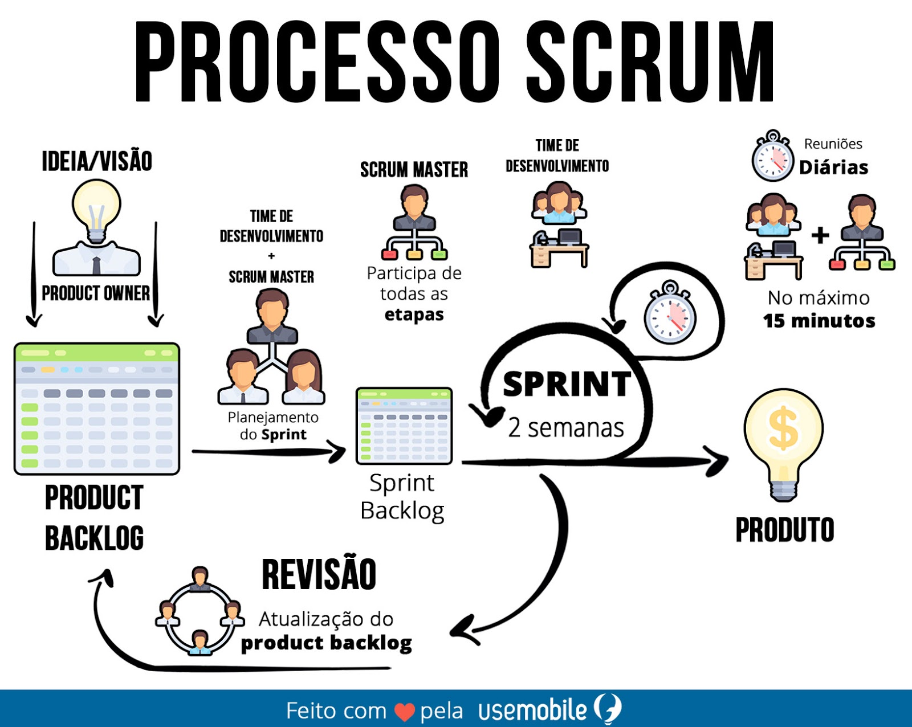
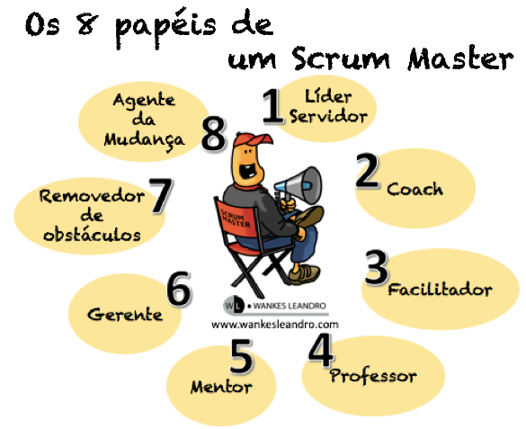

Voltar para página Incial
TECNOLOGIA DA INFORMAÇÃO E SUAS RAMIFICAÇÕES
Conheça mais sobre a Metodologia Ágil Após uma grande abordagem no assunto de métodologia Ágil em nossa materia apresentada, abaixo veremos ainda mais contéudos para aperfeiçoar o nosso entendimento Tecnologia e suas ramificações
COMO APLICAR OS MÉTODOS ÁGEIS NOS SERVIÇOS DE TI O objetivo neste video é demonstrar o passo a passo e fatores de sucesso para aplicar a cultura ágil ou métodos ágeis de gestão de projetos em sua operação de TI (Tecnologia da Informação), Serviços, Suporte, Service Desk, Field, Customer Services, e áreas técnicas relacionadas.
VIDEO
Com todas as metodologias ágeis disponíveis, é importante identificar aquela que será mais útil para o contexto de cada empresa. Também é válido destacar que algumas metodologias podem ser combinadas para assegurar que os projetos sejam mais eficientes.
ALGUMAS DAS METÓDOLOGIA ÁGEIS EXISTENTES:
Scrum;
Feature Driven-Development (FDD);
Scaled Agile Framework (SAFe);
MANIFESTO ÁGIL: VALORES E PRINCÍPIOS Em 2001, um grupo de 17 renomados desenvolvedores de software, agruparam e aprimoraram os diversos conceitos de metodologias ágeis existentes e assinaram o “Manifesto para o Desenvolvimento Ágil de Software”, que passou então a ser muito difundido pelas comunidades de desenvolvimento.
Esse manifesto basicamente reúne 4 valores e 12 princípios que devem ser mantidos em mente, vejamos abaixo o professor André Gomes que descreve um pouco mais o que foi o “Agile Manifesto“:
VIDEO
MAPA MENTAL COM AS PRINCIPAIS INFORMAÇÕES 

PARA MAIS INFORMAÇÕES:
laryssa.mariotto@gmail.com
(11) 98124-5054